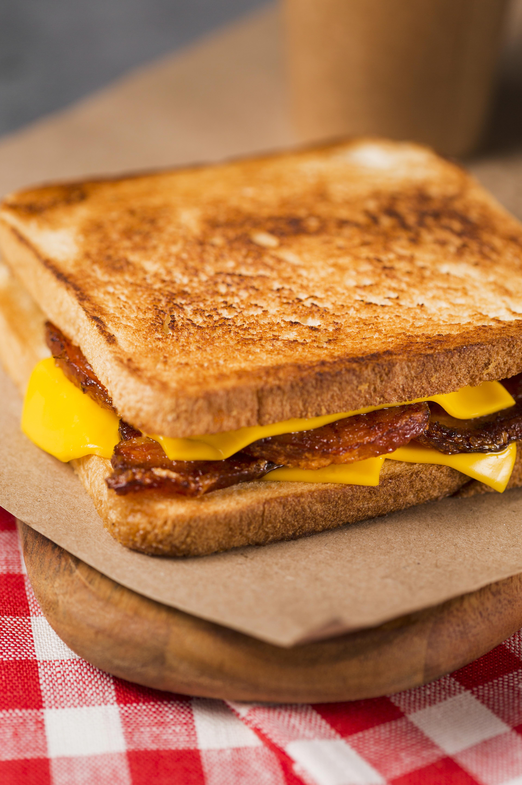

Французский тосты
Завтрак🕒 20 мин.
👩🍳 Настя Евдокимова
Ингредиенты:
- яйцо — 2 шт.
- молоко — 200 мл.
- тосты — 4 шт.
- сахар — 2 ст. л.
- ягоды — 100 г
- сироп топинамбура — 3 ст. л.
Описание:
Смешать молоко с сахаром, добавить яйца, тщательно все взбить. Обмакнуть тосты в смесь и жарить на сливочном масле до золотистой корочки.
Полить сверху сиропом топинамбура и украсить ягодами.